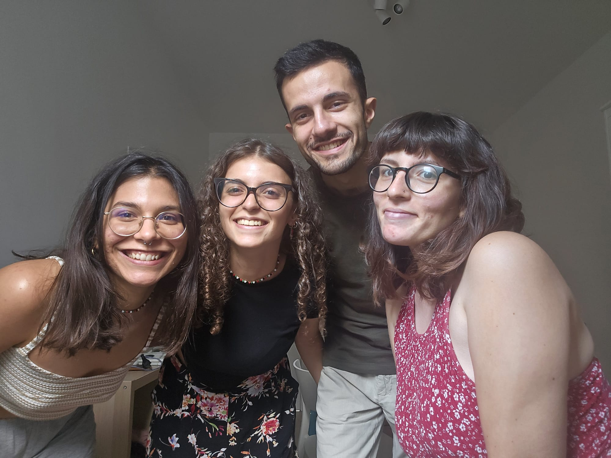

Our group is composed of Davide Arena, Beatrice Barresi, Sara Lancia, and Alice Sabbatini. We are students of the Master's degree in Languages, Communication & Society, an interdisciplinary program focused on linguistic, communicative, and socio-cultural studies.
We collaborate on this Computer Science project by combining different skills and perspectives. Our workflow is based on continuous exchange of ideas, coordination, and shared responsibility, aiming to produce a coherent and well-structured final output.
This experience allows us to apply theoretical knowledge in a practical setting while improving our abilities in teamwork, organization, and digital tools.
